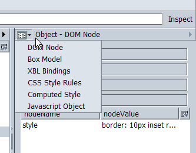

With the DOM Inspector one can remove DOM Nodes from the content tree.
To save the reduced content Save as Webpage complete from the main window.
Additional Information is accessible via the shown drop-down menu.
See the usage manual by Ian Oschger